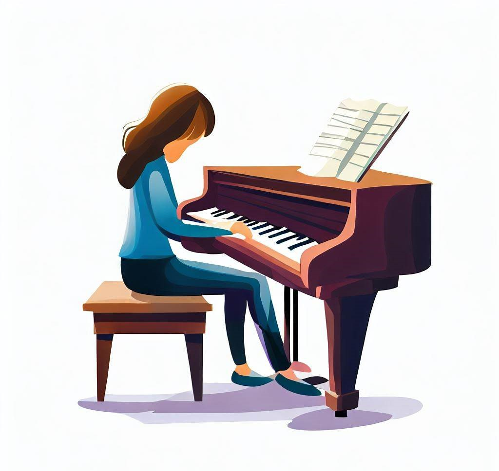

The Future of Education

Reactive inhibition (RI) is probably a phenomenon that you’ve
never heard of. It’s simply a factor that worsens your performance
as you keep practicing. There are two factors that influence it:
the amount of time or repetitions you’ve done and the length of
breaks.Let’s examine the graph below. Let’s imagine your goal is
to play a scale as fast as possible, thus as you practice more,
you generally learn more. This is reflected in the gray line.
However, you are not always able to express everything you learn
and this is reflected in the red line. There is a difference between
your true achieved skill, what you’ve learned, and your actual
performance. As the graph shows, the more time you practice without
taking a break, the greater the level of RI you have is shown in the
red line. If you take a break, it dissipates and you restore your
performance ability at the beginning of the next trial.
The important takeaway from here is that more breaks and shorter
practice bouts is better for performance. One thing this graph doesn’t
suggest is that RI has an effect on your achieved skill level. If this
were the case, it is possible that long practice periods with few breaks
would be as effective as short practice periods with long breaks.
I conducted a study to test the question if the amount of RI affected
the amount learned. I had two groups, group A performed a lot of repetitions
of a motor sequence (25) during a trial and had short breaks (10 s). Group B
performed a few repetitions (5) during the trial and had long breaks (30 s).
We equated the total number of repetitions between the two groups. Thus, group
A had a lot of RI during practice and group B had very little. After 175 completed
sequences, there was a 15 minute rest period where the participants performed
double digit addition. The purpose of this rest period was to fully dissipate
all of the accumulated RI, thus after rest we would have a much more true measure
of the underlying achieved skill for both groups. After the rest, we had both
groups do the exact same task where both A & B performed 5 repetitions and had 30 s
breaks. This again ensured that we were measuring a true reflection of their skill.
What we see in the graph below is that before the rest (dotted line) is that there
is a clear difference in performance between the two groups. However, after rest,
when both groups are performing the same task, they have equivalent performance.
This suggests that RI does not have an effect on learning rates in simple motor
sequence learning tasks.
What does this mean for when you’re practicing the piano? For learning scales,
you can power through practicing one scale at a time, taking breaks only when you
feel like you need to. At the same time being aware that your performance will degrade,
which can be demotivating if you don’t take enough breaks.
Well, this comes with a few caveats. In piano practice, your goal isn’t to play
something as fast as you can, your goal is to play to a specific rhythm. Thus you can
make two types of errors: pressing the wrong note, and timing errors. From this study,
we know that RI doesn’t affect your learning for which note to press in a scale, however,
it’s unclear if it affects the learning of rhythm and timing. The other caveat is that it’s
not optimal to repeatedly practice the same scale over and over again because of the
interleaving effect. It’s more optimal to have a practice schedule like scale A, scale B,
then scale C, and back to scale A, etc. In the next blog post, I’ll talk about why that is
and how to implement it into your piano practice.
At MIDIScale, we’re committed to providing an optimized learning experience for you.
We will be incorporating research findings to help you learn more quicker!
Join the mailing list to gain access to our bi-weekly newsletter and software updates!
This site is protected by reCAPTCHA and the Google Privacy Policy and Terms of Service apply.